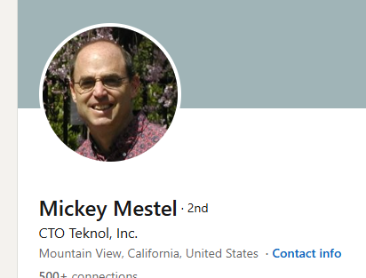

Evidence Deep Dive
Follow the digital paper trail that led us to flag these multi-million dollar grants.
The Claim
$1.5M New Construction & Major Renovation
The state recorded a $1.5 million disbursement to JM3 Holdings, LLC for heavy construction and renovation projects.
The Registry Check
CA Secretary of State: NO RESULTS
Our automated scraper checked the official SOS business registry. The entity is not legally registered to operate as a corporate entity in California.

The License Check
Contractors State License Board: NO RESULTS
It is illegal to perform construction work in California over $500 without a CSLB license. JM3 Holdings holds no such license.
The Reality
NAICS Code: Child Day Care Services
SERP analysis revealed the entity's actual operation is running a licensed child day care center, confirming a severe categorical mismatch for the grant.

The Claim
$1.5M New Construction & Major Renovation
SBA Enterprises was awarded $1.5 million to perform major construction services.
The Registry Check
CA Secretary of State: NO RESULTS
No valid registration for a construction entity under this name exists in the state databases.
The License & Permit Check
CSLB & Local Permits: NO RESULTS
A full sweep of the state contractor board and local city permit registries returned zero active construction operations under SBA Enterprises.
The Reality
Janitorial & Childcare Services
Web search footprint indicates operations firmly in the janitorial and childcare sectors, fully disconnected from the $1.5M construction claim.